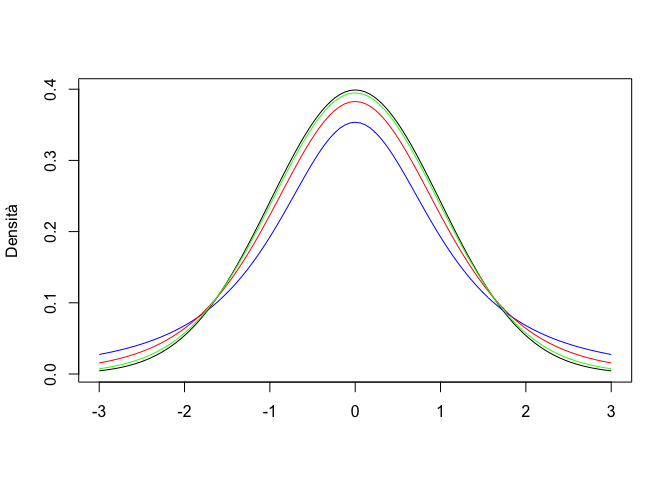
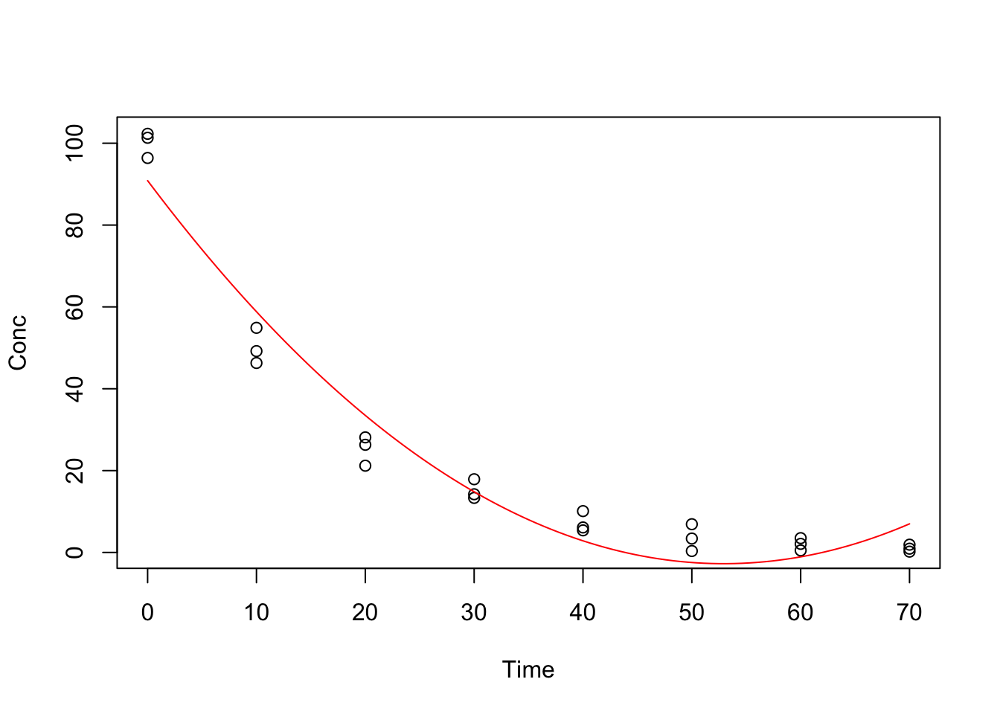
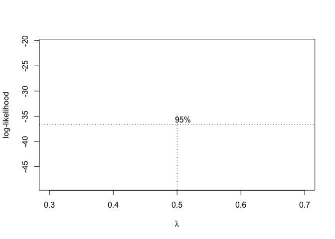
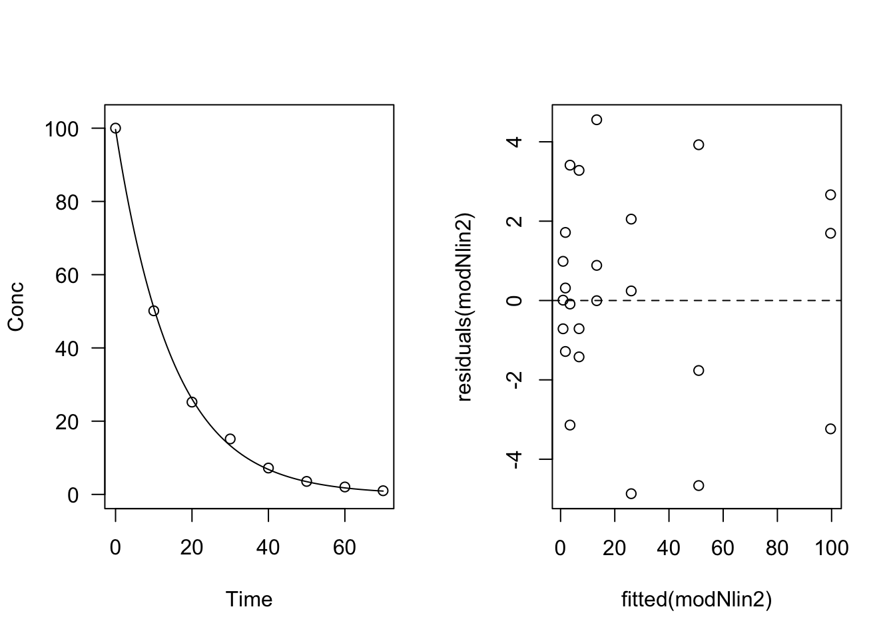
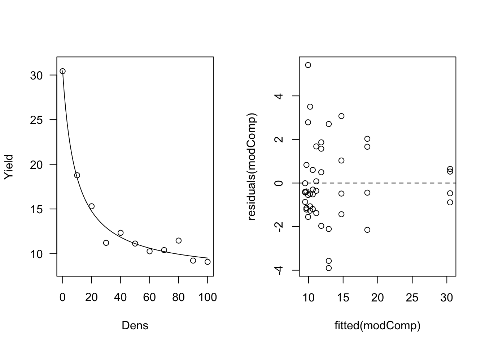
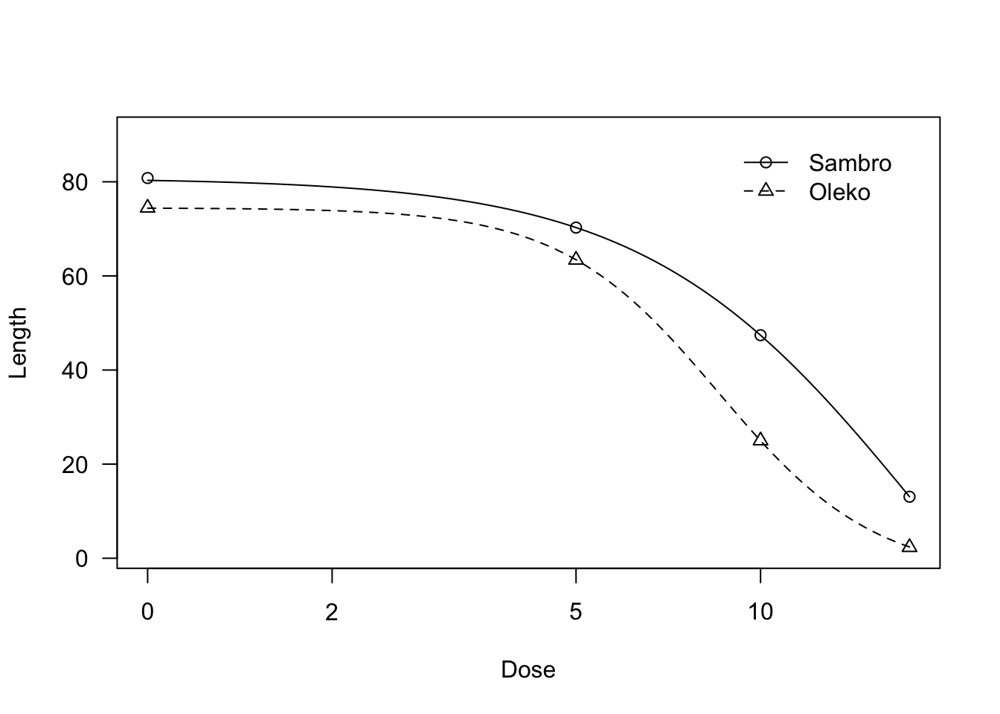

Capitolo 15 La regressione non-lineare
15.1 Introduzione
I fenomeni biologici, come ad esempio la crescita di una coltura, la cinetica degradativa degli erbicidi nel terreno, la risposta produttiva delle colture a densità crescenti di malerbe o a dosi crescenti di concime, la risposta fitotossica di una specie infestante alla dose di un erbicida, hanno in genere andamenti curvilinei, posseggono punti di massimo o minimo, flessi e, soprattutto, hanno frequentemente asintoti. Pertanto, difficilmente possono essere descritti con funzioni lineari, a meno che non ci accontentiamo di approssimare localmente l’andamento dei dati, in un intervallo ristretto della variabile indipendente.
Da un punto di vista pratico è quindi fondamentale sapere adattare ai dati funzioni curvilinee di ogni tipo. Introduciamo il problema con un esempio.
15.2 Esempio 1
Un suolo è stato trattato con metamitron (un erbicida) alla concentrazione di 100 \(ng \,\, g^1\). Dopo essere stato opportunamente mescolato, è stato posto in cella climatica alla temperatura di 20 C, distribuito in 24 contenitori di alluminio. In 8 tempi diversi dopo l’inizio del saggio, sono stati prelevati 3 contenitori e sottoposti ad analisi chimica per la determinazione della concentrazione residua dell’erbicida. I dati osservati sono riportati di seguito.
library(drc)
library(aomisc)
data(degradation)
head(degradation, 10)## Time Conc
## 1 0 96.40
## 2 10 46.30
## 3 20 21.20
## 4 30 17.89
## 5 40 10.10
## 6 50 6.90
## 7 60 3.50
## 8 70 1.90
## 9 0 102.30
## 10 10 49.20
Il grafico suggerisce che la risposta della concentrazione nel tempo è curvilinea, secondo la seguente equazione generale:
\[ Y = f(X, \theta) + \epsilon \]
dove \(X\) è il tempo, \(Y\) la concentrazione, \(\theta\) sono i parametri del modello ed \(\epsilon\) sono i residui, che misurano lo scostamento dei dati osservati dalla risposta attesa, secondo l’equazione prescelta per \(f\). E’ evidente che \(X\) ed \(Y\) sono noti, ma resta da scegliere \(f\) e da stimare \(\theta\).
15.2.1 Scelta della funzione
Uno dei criteri fondamentali, ancorché empirico, per la selezione di una curva è quello di considerarne la forma, in relazione al fenomeno biologico in studio. Un buon riferimento è dato da Ratkowsky (1990), che classifica le equazioni in:
- Curve Lineari
- Retta
- Parabola
- Curve convesse/concave
- Funzione esponenziale
- Funzione di potenza
- Funzione logaritmica
- Iperbole rettangolare
- Funzione monomolecolare
- Funzione di Michaelis-Menten
- Curve sigmoidali
- Funzione logistica
- Funzione di Gompertz
- Funzione ’valori estremi’
- Funzione Log-logistica (Equazione di Hill)
- Weibull-1 (log-Gompertz)
- Weibull-2 (log-Extreme)
- Curve con massimi/minimi
- Equazione di Brain-Cousens
- Equazione di Braggs
La descrizione di queste curve verrà fatta in appendice. In questo caso specifico abbiamo bisogno di una funzione concava verso l’alto e con un asintoto orizzontale coincidente con l’asse delle X. Le conoscenze in relazione alla cinetica di degradazione dei composti chimici ci suggerisce una relazione esponenziale (cinetica del primo ordine), così definita:
\[ Y = A e^{-k \,X} \]
dove A è la concentrazione iniziale e \(k\) e il tasso di degradazione (costante nel tempo).
15.2.2 Stima dei parametri
Dopo aver definito \(f\), dobbiamo stimare i parametri \(A\) e \(k\). In generale esistono tre tecniche fondamentali (Draper and Smith 1998) :
- linearizzazione della funzione tramite trasformazione delle variabili;
- approssimazione della vera funzione curvilinea con una polinomiale in X;
- adattamento ai dati sperimentali di funzioni curvilinee, tramite metodiche di regressione non-lineare.
15.2.2.1 Linearizzazione della funzione
Nel caso specifico, prendendo il logaritmo di entrambe le parti dell’equazione, otteniamo la seguente trasformazione:
\[ log(Y) = log(A) + X \]
Possiamo quindi trasformare la Y nel suo logaritmo ed utilizzare un modello lineare per la stima dei parametri.
mod <- lm(log(Conc) ~ Time, data=degradation)
summary(mod)##
## Call:
## lm(formula = log(Conc) ~ Time, data = degradation)
##
## Residuals:
## Min 1Q Median 3Q Max
## -2.11738 -0.09583 0.05336 0.31166 1.01243
##
## Coefficients:
## Estimate Std. Error t value Pr(>|t|)
## (Intercept) 4.662874 0.257325 18.12 1.04e-14 ***
## Time -0.071906 0.006151 -11.69 6.56e-11 ***
## ---
## Signif. codes: 0 '***' 0.001 '**' 0.01 '*' 0.05 '.' 0.1 ' ' 1
##
## Residual standard error: 0.6905 on 22 degrees of freedom
## Multiple R-squared: 0.8613, Adjusted R-squared: 0.855
## F-statistic: 136.6 on 1 and 22 DF, p-value: 6.564e-11Le funzioni linearizzabili per semplice trasformazione delle variabili sono dette linearizzabili e presentano il vantaggio di semplificare molto i calcoli richiesti per la stima dei parametri. Un grave svantaggio è dato dal fatto che trasformando la Y si trasforma anche la distribuzione degli errori e quindi bisogna verificare che le assunzioni di base dei modelli lineari (omogeneità delle varianze e normalità dei residui) siano valide nella scala trasformata
plot(residuals(mod) ~ fitted(mod),
xlab="Fitted data", ylab="Residuals")
abline(h=0, lty=2)
Figure 15.1: Prova
In questo caso specifico, il grafico dei residui suggerisci deviazioni consistenti rispetto alla omogeneità delle varianze, che risultano inversamente proporzionali ai valori attesi (più alto il logaritmo della concentrazione più bassi i residui). Questo fa sospettare che le varianze potrebbero essere omogenee sulla scala originale, impedendoci quindi di analizzare i dati nella scala trasformata.
15.2.2.2 Approssimazione della vera funzione tramite una polinomiale in X
In generale, relazioni matematiche curvilinee possono essere approssimate tramite funzioni polinomiali di ordine . Le funzioni polinomiali sono molto flessibili; contengono la funzione lineare come caso particolare (n=1) e permette di descrivere curvature anche molto complesse semplicemente aumentando l’ ordine della funzione. In questo modo è possibile ottenere un adattamento ai dati sperimentali teoricamente anche perfetto.
Le funzioni polinomiali sono un tipico esempio di funzioni non-lineari nelle variabili, ma lineari nei parametri; esse possono essere trattate ricorrendo alle metodiche di calcolo normalmente utilizzate per la regressione lineare.
Gli svantaggi delle funzioni polinomiali sono relativi al fatto che queste presentano raramente giustificazione biologica. Per esempio, con le funzioni polinomiali non è possibile descrivere relazioni asintotiche, che sono invece molto comuni in biologia. Nel nostro esempio si potrebbe utilizzare una funzione polinomiale di II grado.
mod2 <- lm(Conc ~ Time + I(Time^2), data=degradation)
plot(Conc ~ Time, data=degradation)
coefs <- coef(mod2)
curve(coefs[1] + coefs[2]*x + coefs[3]*x^2, add=T, col="red")
Vediamo come la funzione inserita, mentre approssima bene i dati nell’intervallo da 0 a 40 giorni, successivamente mostra una ricrescita, che non ha alcun senso biologico.
In generale, le polinomiali sono utilizzate quando sia necessario approssimare una funzione curvilinea in un intervallo della X molto ristretto e non consentono nessuna estrapolazione al di fuori di questo intervallo, dato che possono portare a stime della risposta completamente insensate biologicamente.
Per questi motivi l’ uso delle funzioni polinomiali dovrebbe essere limitato ai casi in cui non si abbia nessuna conoscenza a priori dell’ andamento del fenomeno. Tra l’ altro i moderni supporti informatici consentono di risolvere il problema dell’ adattamento diretto di funzioni curvilinee qualunque senza i lunghi calcoli manuali che venivano richiesti fino ad alcuni anni fa.
15.2.2.3 Adattamento di funzioni curvilinee qualunque: regressione non-lineare
Per quanto sopra accennato, ogniqualvolta possibile, si preferisce utilizzare metodologie di regressione non-lineare, che permettono di adattare direttamente funzioni curvilinee di qualunque tipo ai dati sperimentali. La stima dei parametri, tuttavia, non è immediata e richiede l’impiego di metodi iterativi, come il metodo di Gauss-Newton (Bates and Watts 1988) (Gauss-Newton, Steepest Descent, Marquardt, Simplex; alcune informazioni sono riportate in appendice). In questo caso, è necessario fissare delle stime iniziali dei parametri, che vengono corrette in ogni iterazione successiva fino ad ottenere la convergenza sui valori che minimizzano lo scostamento tra i dati osservati e la funzione non-lineare (metodo dei minimi quadrati non-lineari). Ovviamente, trattandosi di metodi iterativi, le stime ottenute sono solo un’approssimazione (accettabile!) dei valori reali.
15.2.3 La regressione non-lineare con R
La funzione più comune in R per la parametrizzazione di funzioni non-lineari è nls(), che è descritta in dettaglio da C. Ritz and Streibig (2008). Nella chiamata alla funzione dobbiamo anche fornire stime iniziali per i valori dei parametri. Ottenere queste stime è facile pensando al significato biologico dei parametri: \(A\) è la concentrazione iniziale e quindi una stima ragionevole è data dal valor medio osservato al tempo 0 (100). Il parametro \(k\) è invece il tasso di degradazione relativo; possiamo notare che nei primi 10 giorni la concentrazione si riduce della metà circa, cioè si abbassa mediamente un po’ più del 5% al giorno (considerando che inizialmente il calo è più rapido). Possiamo quindi assegnare a \(k\) un valore iniziale pari a 0.06.
modNlin <- nls(Conc ~ A*exp(-k*Time),
start=list(A=100, k=0.06),
data=degradation)
summary(modNlin)##
## Formula: Conc ~ A * exp(-k * Time)
##
## Parameters:
## Estimate Std. Error t value Pr(>|t|)
## A 99.634898 1.461047 68.19 <2e-16 ***
## k 0.067039 0.001887 35.53 <2e-16 ***
## ---
## Signif. codes: 0 '***' 0.001 '**' 0.01 '*' 0.05 '.' 0.1 ' ' 1
##
## Residual standard error: 2.621 on 22 degrees of freedom
##
## Number of iterations to convergence: 4
## Achieved convergence tolerance: 1.549e-06In alternativa, preferiamo utilizzare il package drc, con la funzione drm(), che ha un’infrastruttura molto comoda per le regressioni non-lineari in genere, compresa la definizione di funzioni di self-starting, che ci liberano dal problema di dover reperire le stime iniziali dei parametri (Christian Ritz et al. 2015). La chiamata è simile a quella di nls(), anche se vengono indicate separatamente le due variabili (Y ~ X) e la funzione (in questo caso il nome è firstOrder()).
library(drc)
modNlin2 <- drm(Conc ~ Time, fct=DRC.expoDecay(),
data=degradation)
summary(modNlin2)##
## Model fitted: Exponential Decay Model (2 parms)
##
## Parameter estimates:
##
## Estimate Std. Error t-value p-value
## init:(Intercept) 99.6349312 1.4646680 68.026 < 2.2e-16 ***
## k:(Intercept) 0.0670391 0.0019089 35.120 < 2.2e-16 ***
## ---
## Signif. codes: 0 '***' 0.001 '**' 0.01 '*' 0.05 '.' 0.1 ' ' 1
##
## Residual standard error:
##
## 2.621386 (22 degrees of freedom)I risultati sono praticamente identici.
15.3 Riparametrizzazione delle funzioni
In alcuni casi è conveniente riparametrizzare le funzioni, se è necessario per le nostre esigenze di analisi. Anche questo aspetto sarà illustrato con un esempio.
15.3.1 Esempio 2
E’stata valutata la produzione del girasole a densità crescenti di piante infestanti, da 0 a 100 piante per metro quadrato. I risultati ottenuti sono riportati nel dataset sottostante.
data(competition)
head(competition)## Dens Yield
## 1 0 29.58587
## 2 10 20.16776
## 3 20 17.82846
## 4 30 9.02289
## 5 40 13.41521
## 6 50 12.80159Secondo la letteratura, la relazione tra perdite produttive e densità delle piante infestanti può essere descritta con una funzione iperbolica di questo tipo (Cousens, 1985):
\[YL = \frac{iD}{1 + \frac{iD}{a}}\]
Dove \(YL\) sta per perdite produttive (Yield Loss) percentuali, \(D\) è la densità delle piante infestanti, \(a\) è la perdita produttiva massima asintotica. Il grafico è mostrato qui sotto.
curve(3*x/(1+(3*x)/60), from=0, to=350, xlab="Weed density",
ylab="Yield loss (%)", ylim=c(0,80))
abline(a=0, b=3, lty=2, ylim=c(0,2))
abline(h=60, lty=2, ylim=c(0,2))
text(20,50, label="i = 3")
text(300,65, label="A = 60")
Normalmente, in campo non vengono determinate le perdite produttive, bensì le produzioni, come nel caso del nostro dataset. Di conseguenza abbiamo due possibilità:
- modificare il dataset, esprimendo i dati in termini di perdite produttive percentuali;
- modificare il modello, per utilizzare la produzione come variabile dipendente, al posto della perdita produttiva.
La prima strada è più agevole, ma ci porta a perdere parte dell’informazione, cioè il livello produttivo nel testimone non infestato. La seconda strada può essere perseguita considerando che le perdite produttive percentuali sono pari a:
\[YL = \frac{{YWF - YW}}{{YWF}} \times 100\]
dove \(YWF\) è la produzione nel testimone non infestato e \(YW\) è la produzione nella parcella in studio. Dalla precedente funzione si ricava che:
\[YW = YWF - \frac{YL \times YWF}{100} = YWF\left( {1 - \frac{YL}{100}} \right)\]
che mostra come la produzione in una parcella infestata (\(YW\)) può essere ottenuta in funzione della perdita produttiva. Considerando l’equazione precedente e il modello delle perdite produttive, possiamo scrivere:
\[YW = YWF\left( {1 - \frac{iD}{100\left( {1 + \frac{iD}{a}} \right)}} \right)\]
Questa equazione consente di utilizzare i dati produttivi osservati come variabile dipendente e di stimare i parametri competitivi \(i\) ed \(a\), insiema alla produzione stimata in asssenza di competizione. Il fitting può essere eseguito utilizzando drm() e la funzione cousens85().
modComp <- drm(Yield ~ Dens, fct=DRC.cousens85() ,
data=competition)
summary(modComp)##
## Model fitted: Yield-Weed Density function (Cousens, 1985) (3 parms)
##
## Parameter estimates:
##
## Estimate Std. Error t-value p-value
## YWF:(Intercept) 30.47211 0.92763 32.8493 < 2.2e-16 ***
## i:(Intercept) 8.24038 1.36541 6.0351 3.857e-07 ***
## a:(Intercept) 75.07312 2.40366 31.2328 < 2.2e-16 ***
## ---
## Signif. codes: 0 '***' 0.001 '**' 0.01 '*' 0.05 '.' 0.1 ' ' 1
##
## Residual standard error:
##
## 1.866311 (41 degrees of freedom)15.4 Inferenze statistiche e verifiche delle assunzioni di base
Le assunzioni parametriche di base relative ai modelli non-lineari sono le stesse dei modelli lineari e, di conseguenza, gli strumenti diagnostici sono analoghi. Bisogna tuttavia menzionare il fatto che, dato l’impiego di metodi iterativi per la ricerca dei valori dei parametri, tutti i risultati a cui si perviene (stima dei parametri, della varianza residua e numero dei gradi di libertà relativi) sono solo una approssimazione di quelli reali. Per questo motivo, nel caso non-lineare i metodi grafici (analisi dei residui) sono largamente preferiti.
15.4.1 Analisi grafica dei residui
I due strumenti grafici preferiti sono la visualizzazione della funzione insieme ai dati osservati e la visualizzazione dei residui, plottati verso i valori attesi. Avendo utilizzato la funzione drm(), possiamo approfittare dell’oggetto risultante per disegnare i grafici. Considerate che la funzione plot() applicata all’oggetto drm restituisce di default un grafico sul logaritmo della variabile indipendente. In questo caso abbiamo ovviato a questo comportamento utilizzando la funzione log=“”.
Consideriamo i due esempi precedenti.
par(mfrow=c(1,2))
plot(modNlin2, log="")
plot(residuals(modNlin2) ~ fitted(modNlin2))
abline(h=0, lty=2)
Nel caso dell’esempio relativo alla cinetica di degradazione, non si vedono importanti deviazioni rispetto agli assunti di base.
par(mfrow=c(1,2))
plot(modComp, log="")
plot(residuals(modComp) ~ fitted(modComp))
abline(h=0, lty=2)
Per quello che riguarda il modello di competizione, osserviamo invece una proporzionalità inversa tra residui e medie, che attesta qualche problema con l’omogeneità delle varianze.
15.4.2 Test F per la mancanza di adattamento (approssimato)
Se abbiamo le repliche (come nei due esempi fin qui trattati) possiamo effettuare l’analisi della varianza. In questo modello, i valori attesi sono costituiti dalle medie dei trattamenti (tempi e livelli di densità, rispettivamente per i due esempi) e lo scostamento di ogni dato rispetto alla ‘sua’ media è evidentemente dovuto solo all’errore sperimentale ‘puro’. Nel modello di regressione, invece, esiste una componente aggiuntiva di errore, cioè lo scostamento di ogni media dalla curva di regressione. Questa componente si chiama mancanza d’adattamento e può essere stimata per differenza. Effettuiamo il calcolo per il primo esempio.
La tabella ANOVA è la seguente:
modAov <- lm(Conc ~ factor(Time), data=degradation)
anova(modAov)## Analysis of Variance Table
##
## Response: Conc
## Df Sum Sq Mean Sq F value Pr(>F)
## factor(Time) 7 24698.4 3528.3 415.29 < 2.2e-16 ***
## Residuals 16 135.9 8.5
## ---
## Signif. codes: 0 '***' 0.001 '**' 0.01 '*' 0.05 '.' 0.1 ' ' 1SSa <- anova(modAov)[2,2]Inseriamo il tempo come fattore (quindi variabile qualitativa, non quantitativa) e notiamo che la devianza del residuo è pari a 135.9. Salviamo questa quantità nella variabile SSa. La varianza del residuo del modello di regressione si ottiene facendo la somma dei quadrati degli scarti dei dati rispetto ai valori attesi. La salviamo nella variabile SSr.
SSr <- sum(residuals(modNlin2)^2)
SSr## [1] 151.1766Come ci aspettavamo, il modello di regressione ha una devianza più alta, in quanto questa contiene la componente di mancanza d’adattamento, pari alla differenza tra SSa e SSr, cioè:
SSl <- SSr - SSa
SSl## [1] 15.23792Mentre la devianza del residuo dell’ANOVA ha 16 gradi di libertà, quella del residuo della regression ha N - P = 22, gradi di libertà, dove N è il numero dei dati (24) e P è il numero dei parametri stimati (2). La devianza del ‘lack of fit’ ha quindi 22 - 16 = 6 gradi di libertà. La varianza del lack of fit è quindi pari a:
SSl/6## [1] 2.539654Possiamo quindi confrontare formalmente, con un test di F, le due varianze dell’errore puro (dall’ANOVA: 8.5) e quella della mancanza di adattamento, per vedere se quest’ultima è significativamente più ‘grande’ di quella dell’errore puro. L’ipotesi nulla è che la mancanza d’adattamento non è rilevante ed il test di F è:
(Fvalue <- (SSl/6) / anova(modAov)[2,3]) #F value## [1] 0.2989175pf(0.2989, 6, 16, lower.tail=F)## [1] 0.07155798Chiaramente il test è non significativo.
A questo risultato si arriva facilmente utilizzando la funzione modelFit(), applicata all’oggetto drm.
modelFit(modNlin2)## Lack-of-fit test
##
## ModelDf RSS Df F value p value
## ANOVA 16 135.94
## DRC model 22 151.18 6 0.2989 0.9284Per il secondo esempio abbiamo
modelFit(modComp)## Lack-of-fit test
##
## ModelDf RSS Df F value p value
## ANOVA 33 116.95
## DRC model 41 142.81 8 0.9119 0.518815.4.3 Errori standard dei parametri
Un’altra valutazione importante da fare è quella relativa agli errori standard delle stime dei parametri, che non debbono mai essere superiori alla metà del valore del parametro stimato, cosa che in questo caso è pienamente verificata. Se così non fosse, l’intervallo di confidenza del parametro conterrebbe lo zero, il che equivale a dire che il valore stimato non sarebbe significativamente diverso da zero. Di conseguenza, avere, per esempio, un ‘rate’ non diverso da zero significherebbe che di fatto la degradazione non avviene o comunque non è descrivibile con il modello proposto.
15.4.4 Coefficiente di determinazione
Abbiamo visto che il residuo della regressione è pari a 151.2 con 16 gradi di libertà. La devianza totale dei dati (somma dei quadrati degli scarti rispetto alla media generale) è invece:
SSt <- deviance(lm(Conc ~ 1, data=degradation))ed ha 23 gradi di libertà. La differenza:
SSt - SSr## [1] 24683.13costituisce la devianza spiegata dalla regressione. Il coefficente di determinazione \(R^2\) è quindi:
\[R^2 = \frac{SSt - SSr}{SSt} = \frac{24683.13}{24834.3} = 0.994\]
Che attesta un ottimo adattamento, in quanto è vicino ad 1. Bisogna ricordare che, pur essendo utilizzato in modo pressoché ubiquitario, il coefficiente di determinazione per i modelli nonlineari fornisce solo un’indicazione abbastanza grezza sulla bontà del modello. Infatti:
- valori bassi possono essere ottenuti non solo perché la devianza della regressione è bassa, ma anche perché la devianza totale delle osservazioni è alta (molti dati e molto variabili).
- L’ \(R^2\) dipende dall’intervallo di variazione della variabile indipendente; di conseguenza, se nella regressione aggiungiamo uno o più livelli della X, otteniamo un innalzamento del valore di \(R^2\), che tuttavia non necessariamente produce un miglior modello. In questo caso, ad esempio, se la semivita è pari a 10 giorni, un esperimento con 0, 20, 40 e 80 giorni darà sicuramente valori di \(R^2\) più alti che non un esperimento con 5, 10, 20 e 40 giorni, anche se non necessariamente la bontà di adattamento è migliore.
- Il coefficiente di determinazione è sensibile al numero di variabili esplicative presenti nel modello, e quindi non premia i modelli più semplici (viola quindi il principio del ‘rasoio di Occam’).
- Il coefficiente di determinazione è sensibile al numero di parametri presenti nel modello. Modelli con molti parametri danno sempre valori di \(R^2\) alti, ma non rispettano spesso le caratteristiche di semplicità e senso biologico che sono invece richieste ad un buon modello (anche qui una netta violazione del rasoio di Occam.
15.4.5 Coefficiente di determinazione aggiustato
Per evitare almeno gli ultimi due problemi, viene proposto il coefficiente di determinazione corretto, dato dalla proporzione di varianza (MS) spiegata dalla regressione:
\[R_a^2 = 1 - \frac{MS_{residuo} }{MS_{tot} }\]
Dato che dalle devianze si passa alle varianze, il valore di R\(^2\) corretto è detto anche ‘R\(^2\) corretto per i gradi di libertà’. Il suo rapporto con il coefficiente di determinazione tradizionale è:
\[ R_a^2 = 1 - \frac{\left( {1 - R^2 } \right)\left( {n - 1} \right)}{\left( {n - k - 1} \right)} \]
dove \(n\) è il numero di osservazioni e \(k\) il numero dei regressori. L’\(R^2\) corretto è sempre più basso dell \(R^2\) e diminuisce con l’aggiunta al modello di un nuovo regressore se l’incremento di devianza totale è meno che quello della devianza residua. Può assumere valori negativi se la varianza del residuo è maggiore della varianza della variabile dipendente.
15.4.6 Altre statistiche
Altri indicatori di bontà di adattamento molto usati in letteratura per finalità puramente descrittive sono il Mean Square Error:
\[MSE = \frac{1}{N}\sum\limits_{i = 1}^N {(Y_i - } \widehat{Y_i })^2\]
che, nel caso in esempio, è pari a 6.299.
Come vediamo si tratta della varianza del residuo, ma ottenuta divedendo per il numero dei dati e non per il numero dei gradi di libertà (varianza della popolazione e non varianza del campione). E’quindi un indicatore inferenziale distorto, ma è importante consocerlo perché viene spesso utilizzato per stabilire la bontà d’adattamento e il valore predittivo di modelli deterministici.
Il MSE è spesso difficile da valutare perché, essendo una somma di quadrati, la sua unità di misura non è quella dei dati. Per questo motivo, spesso si utilizza la sua radice quadrata:
\[RMSE = \sqrt{MSE}\]
che ha la stessa unità di misura delle osservazioni. In questo caso, il RRMSE (Root Mean Square Error) è uguale a 2.510, che, considerando i dati ,rappresenta un valore decisamente basso.
Una variante molto utilizzata è il Relative Root Mean Square Error (RRMSE):
\[RRMSE = \frac{\sqrt{MSE}} {\overline{Y}} \times 100\]
dove \(\overline{Y}\) è la media dei dati. Si tratta di un indicatore analogo al coefficiente di variabilità, nel quale la bontà del modello viene espressa relativamente alla media delle previsioni. Nel nostro caso è pari al 9.8%.
15.5 Gestione delle situazioni ‘patologiche’
In alcuni casi la verifica della bontà del modello mette in luce situazioni patologiche. In particolare potrebbe capitare che il modello non sia adatto ai dati, o, al contrario, che i dati non siano adatti al modello. Nel primo caso è necessario trasformare il modello, mentre nel secondo caso l’azione più comune è quella di trasformare i dati.
15.5.1 Trasformazione del modello
La trasformazione del modello dalla sua forma originaria in una forma alternativa può rendersi necessaria per diversi motivi:
- il modello non presenta un buon adattamento ai dati sperimentali e l’analisi dei residui suggerisce deviazioni sistematiche. Per esempio, in una curva dose risposta può capitare che i residui siano prevalentemente positivi nella parte iniziale, facendo sospettare un effetto stimolante a basse dosi. Questo effetto non può essere descritto con una funzione sigmoidale, ma richiede un modello divsero, caratterizzato da un picco iniziale.
- Alcuni parametri non sono significativamente diversi da zero, o non sono ben stimati, o assumono valori biologicamente irrealistici. In questo caso si può considerare la loro eliminazione dal modello, se è possibile. In alternativa, si può considerare la possibilità di imporre un vincolo, cioè sostituire il parametro con un valore arbitrario biologicamente ragionevole. Quest’ ultima soluzione è tuttavia da considerare con attenzione e buon senso, proprio per la sua arbitrarietà.
- Alta correlazione tra i parametri. Questa situazione fa sospettare che il modello sia troppo complesso (troppi parametri) e quindi non supportato dai dati. In questo caso bisognerebbe verificare se e come sia possibile utilizzare un modello più semplice.
15.5.2 Trasformazione dei dati
Se non è il modello ad essere mal definito, ma sono invece i dati a non conformarsi alle assunzioni di base della regressione, è necessarip valutare l’esigenza di una trasformazione stabilizzante. Nel caso dell’Esempio 2 la possibile eterogeneità delle varianze può spingerci a valutare l’impiego della famiglia di trasformazioni descritta da Box e Cox (Box and Cox 1964). L’unica differenza rispetto alle regressioni lineari è nel fatto che operare la trasformazione della sola variabile dipendente comporta anche la modifica della scala sulla quale vengono stimati i parametri, che quindi non conservano il loro valore biologico. Ad esempio, nel modello di competizione, il parametro \(a\) è la perdita produttiva massima percentuale. Tuttavia, se dovessimo trasformare i dati nel logaritmo prima dell’analisi il parametro \(a\) non conserverebbe il suo significato biologico.
Per questo motivo, dato che spesso le regressioni non-lineari vengono eseguite proprio perchè si è interessati all’informazione contenuta nei parametri di un modello, si preferisce adottare la cosiddetta tecnica della “trasformazione di entrambe le parti”, o metodo TBS (“Transform Both Sides”) e trasformare quindi sia i dati osservati per la variabile dipendente, sia il modello (Carroll and Ruppert 1988):
\[Y^\lambda = f(X)^\lambda\]
In questo modo si ottengono i parametri della funzione sulla scala originale come se la trasformazione non fosse stata eseguita per niente.
Se abbiamo utilizzato la funzione drm() per il fitting, possiamo utilizzare la funzione boxcox(), che confronta la verosimiglianza dei modelli ottenuti variando il valore di \(\lambda\) da -2 a 2. Questa funzione applicata al modello di competizione mostra che il massimo di verosimiglianza si ottiene proprio con \(\lambda\) = 1, cioè a dire che la trasformazione non è affatto necessaria.
boxcox(modComp)
Se lo fosse, applicarla sarebbe banale: basterebbe aggiungere alla funzione di fitting l’argomento bcVal, a cui si dovrebbe assegnare il valore da utilizzare per la trasformazione.
modComp2 <- drm(Yield ~ Dens, fct=DRC.cousens85(), data=competition,
bcVal=0.5)
summary(modComp2)##
## Model fitted: Yield-Weed Density function (Cousens, 1985) (3 parms)
##
## Parameter estimates:
##
## Estimate Std. Error t-value p-value
## YWF:(Intercept) 30.5155 1.4523 21.0114 < 2.2e-16 ***
## i:(Intercept) 8.4999 1.7141 4.9589 1.28e-05 ***
## a:(Intercept) 75.0527 2.4308 30.8762 < 2.2e-16 ***
## ---
## Signif. codes: 0 '***' 0.001 '**' 0.01 '*' 0.05 '.' 0.1 ' ' 1
##
## Residual standard error:
##
## 0.5315512 (41 degrees of freedom)
##
## Non-normality/heterogeneity adjustment through Box-Cox transformation
##
## Specified lambda: 0.5Vediamo che, nonostante la trasformazione, i parametri conservano il loro significato biologico.
15.6 Funzioni lineari e nonlineari dei parametri
Gli studi di degradazione, in genere, richiedono la determinazione della semivita. E’facile vedere che questa può essere ricavata dalla funzione di degradazione in questo modo:
\[ \frac{A}{2} = A \exp ( - k \,\, t_{1/2}) \]
da cui:
\[ t_{1/2} = - \frac{ \log \left( {\frac{1}{2}} \right) }{k}\]
Vediamo insomma che la semivita \(t_{1/2}\) è una funzione non-lineare di k e può essere ricavata facilmente come:
-log(1/2) / coef(modNlin2)[2]## k:(Intercept)
## 10.33945Si pone ora il problema di ricavare l’errore standard della semivita e/o i suoi intervalli di confidenza. La legge di propagazione degli errori ci insegna che se abbiamo una quantità \(Z\) con varianza \(\sigma^2_Z\) e facciamo una trasformazione lineare:
\[W = b_0 + b_1 \,\, Z\]
con \(b_0\) e \(b_1\) numeri reali qualunque, la varianza di W è data da:
\[\sigma^2_W = b_1^2 \,\, \sigma^2_Z\]
In questo caso, purtroppo, la funzione di trasformazione è non lineare. Tuttavia, una funzione non-lineare (ma vicina alla linearità) può essere approssimata utilizzando la sua tangente in un punto dato (sviluppo in serie di Taylor; Fig 1).
curve(-log(1/2)/x, from=0.05, to=0.1)
curve(log(1/2)/(0.067^2)*(x - 0.067) +
10.35, from=0.067, to=0.1, add=T, lty=1)
Consideriamo il punto \(k = 0.067\), dove la funzione vale \(t_{1/2} = 10.35\). Immaginiamo di prendere la retta tangente nel punto P(0.067, 10.35), questa retta ha equazione:
\[ y = m (x - x_0) + y_0 \]
dove m è la derivata prima della funzione nel punto \(k=0.067\):
\[ m = f'(k) = \frac{log(1/2)}{k^2}\]
Nei dintorni di 0.067 le due funzioni (quella nonlineare e la sua tangente) sono molto vicine, quasi equivalenti. Allora posso pensare di utilizzare la tangente per applicare la legge di propagazione degli errori. Di conseguenza, la varianza della semivita è data da:
\[\sigma^2_{t_{1/2}} = m^2 \,\, \sigma^2_k\]
e l’errore standard è:
\[\frac{|log(1/2)|}{0.067^2} \,\, 0.0019 = 0.2944\]
Ovviamente, in R, possiamo utilizzare la funzione deltaMethod() del package car, per arrivare agli stessi risultati.
library(car)## Loading required package: carDatacoefs <- coef(modNlin2)
names(coefs) <- c("A", "k")
deltaMethod(object=coefs, g="-log(0.5)/k", vcov.=vcov(modNlin2))## Estimate SE 2.5 % 97.5 %
## -log(0.5)/k 10.33945 0.2944068 9.762424 10.9164815.7 Modelli ANCOVA
In molti casi, gli esperimenti includono contemporaneamente variabili qualitative e quantitative. Ad esempio, possiamo studiare la risposta alla concimazione azotata (variabile quantitativa) per due varietà di frumento (variabile qualitativa). In questo caso si parla di ANalisi della COVArianza (ANCOVA).
Tradizionalmente, questo modelli sono stati visti come modelli ANOVA per la variabile qualitativa (confronto varietale, quindi, nell’esempio precedente), nei quali la produzione di una parcella è aggiustata per il livello di concimazione azotata. Più di recente, sta divenendo importante ua visione alternativa, che consiste nel considerare un modello ANCOVA come un’analisi di regressione per ogni livello della variabile qualitativa. Anche in questo caso partiremo da un esempio.
15.7.1 Esempio 3
E’ stata misurata la risposta di due varietà di girasole (Sambro e Oleko) alla presenza di una sostanza allelopatica nel terreno di coltivazione. Questa sostanza è stata utilizzata a quattro dosi (da 0 a 17.5 g/ha) ed è stata rilevata la lunghezza dell’ipocotile degli individui trattati (Pannacci, Pettorossi, and Tei 2013).
data(sunflower)
head(sunflower, 10)## Dose Rep Var Length
## 1 0.0 1 Sambro 77.0
## 2 0.0 2 Sambro 85.2
## 3 0.0 3 Sambro 80.2
## 4 5.0 1 Sambro 66.8
## 5 5.0 2 Sambro 70.2
## 6 5.0 3 Sambro 73.8
## 7 10.0 1 Sambro 51.6
## 8 10.0 2 Sambro 47.4
## 9 10.0 3 Sambro 43.2
## 10 17.5 1 Sambro 11.2In letteratura, è noto che la risposta degli organismi ad agenti tossici è sigmoidale, sul logaritmo della dose. L’equazione più utilizzata è quella log-logistica:
\[y = c + \frac{d - c}{1 + \exp \{ b[\log (dose) - \log (e)] \} }\]
dove \(y\) è la risposta (la lunghezza, nel nostro esempio), \(x\) è la dose, \(d\) è la risposta nel testimone non trattato, \(c\) è la risposta a dose estremamente elevata (che non necessariamente è nulla), \(e\) è la dose che produce una risposta a metà strada tra \(d\) e \(c\) (normalmente nota come ED50) e b è la pendenza della curva nel punto di flesso.
Questo modello può essere parametrizzato con la funzione drm(), utilizzando la funzione LL.4() ed inserendo la varietà di frumento come variabile qualitativa (argomento curveid).
mod.sun <- drm(Length ~ Dose, curveid=Var, data = sunflower, fct = LL.4())
summary(mod.sun)##
## Model fitted: Log-logistic (ED50 as parameter) (4 parms)
##
## Parameter estimates:
##
## Estimate Std. Error t-value p-value
## b:Sambro 1.9425 1.5487 1.2543 0.22775
## b:Oleko 3.3872 1.3756 2.4624 0.02553 *
## c:Sambro -61.1131 228.5635 -0.2674 0.79259
## c:Oleko -3.9345 11.8818 -0.3311 0.74484
## d:Sambro 80.8000 5.7774 13.9855 2.174e-10 ***
## d:Oleko 74.4500 5.7866 12.8659 7.450e-10 ***
## e:Sambro 18.3383 29.1718 0.6286 0.53846
## e:Oleko 8.5322 1.2763 6.6848 5.242e-06 ***
## ---
## Signif. codes: 0 '***' 0.001 '**' 0.01 '*' 0.05 '.' 0.1 ' ' 1
##
## Residual standard error:
##
## 10.02111 (16 degrees of freedom)Otteniamo quattro parametri (quindi una curva diversa) per ogni varietà. Notiamo subito che l’asintoto inferiore assume valori negativi, quindi inaccettabili da un punto di vista biologico. Provvediamo quindi a rimuovere gli asintoti inferiori, ammettendo che, a dose molto elevata, la sostanza in studio inibisce completamente la crescita dell’ipocotile in entrambe le varietà. Riparametrizziamo il modello, arrivando alla determinazione di due curve diverse con tre parametri ciascuna (funzione LL.3()).
mod.sun2 <- drm(Length ~ Dose, curveid=Var, data = sunflower, fct = LL.3())
summary(mod.sun2)##
## Model fitted: Log-logistic (ED50 as parameter) with lower limit at 0 (3 parms)
##
## Parameter estimates:
##
## Estimate Std. Error t-value p-value
## b:Sambro 3.20503 0.99156 3.2323 0.004622 **
## b:Oleko 3.73287 1.07596 3.4693 0.002737 **
## d:Sambro 78.90444 5.26134 14.9970 1.293e-11 ***
## d:Oleko 74.03407 5.55331 13.3315 9.112e-11 ***
## e:Sambro 11.03545 1.07380 10.2770 5.856e-09 ***
## e:Oleko 8.23737 0.88496 9.3081 2.661e-08 ***
## ---
## Signif. codes: 0 '***' 0.001 '**' 0.01 '*' 0.05 '.' 0.1 ' ' 1
##
## Residual standard error:
##
## 9.641889 (18 degrees of freedom)plot(mod.sun)
I risultati sono analoghi a quelli che avremmo ottenuto parametrizzando separatamente le curve per le due varietà ,ma con chiari vantaggi che illustreremo nel prossimo capitolo.
15.8 Confronto tra modelli alternativi
La possibilità di confrontare modelli matematici è forse uno degli aspetti più rilevanti delle regressioni non-lineari, nel senso che ci permette di valutare e scegliere ipotesi biologiche, in base alla loro maggiore o minore compatibilità con le osservazioni sperimentali.
Se prendiamo l’esempio precedente, è rilevante chiedersi se le due varietà rispondono alla stessa sostanza allelopatica in modo diverso. In termini statistici abbiamo due modelli alternativi:
- modello con due curve diverse, una per ogni varietà
- modello alternativo, con un’unica curva di risposta per le due varietà
Questo secondo modello deriva dal primo, semplicemente rimuovendo tre parametri, cioè un valore di \(b\), uno di \(d\) ed uno di \(e\). Si tratta quindi di due modelli ‘nested’. Parametrizziamo il modello alternativo.
mod.sunR <- drm(Length ~ Dose, data = sunflower, fct = LL.3())
summary(mod.sunR)##
## Model fitted: Log-logistic (ED50 as parameter) with lower limit at 0 (3 parms)
##
## Parameter estimates:
##
## Estimate Std. Error t-value p-value
## b:(Intercept) 3.23478 0.78527 4.1193 0.0004885 ***
## d:(Intercept) 76.81273 4.52016 16.9934 9.481e-14 ***
## e:(Intercept) 9.46516 0.82245 11.5085 1.568e-10 ***
## ---
## Signif. codes: 0 '***' 0.001 '**' 0.01 '*' 0.05 '.' 0.1 ' ' 1
##
## Residual standard error:
##
## 11.34069 (21 degrees of freedom)Quando i modelli sono ‘nested’ è possibile confrontarli con un test di F per la ‘extra sum of squares’. Le devianze del residuo dei due modelli sono date dalla somma dei quadrati degli scarti: il modello ridotto presenta, ovviamente, un peggior fitting e quindi una devianza molto più alta.
devC <- sum(residuals(mod.sun2)^2)
devR <- sum(residuals(mod.sunR)^2)
devC; devR## [1] 1673.388## [1] 2700.837I gradi di libertà delle due devianze sono rispettivamente 24 - 6 = 18 per il modello completo con 6 parametri e 24 - 3 = 21 per il modello ridotto. La differenza (exra sum of squares) è 1027.448 con 3 gradi di libertà. Questa quota aggiuntiva è legata alla rimozione dei tre parametri e la relativa varianza può essere confrontata con la varianza del residuo del modello completo, per vedere se la rimozione dei parametri provoca un significativo incremento della mancanza di adatttamento.
\[ F = \frac{\frac{RSS_c - RSS_s}{df_c - df_s}}{\frac{RSS_c}{df_c}} = \frac{\frac{1027.448}{3}}{\frac{1673.4}{18}}= 3.684\]
A questo valore di F corrisponde una probabilità pari a 0.0315, che ci permette di rifiutare l’ipotesi nulla di assenza di differenza tra le due varietà. In R il confronto tra modelli ‘nested’ si esegue con la funzione anova()
anova(mod.sun2, mod.sunR)##
## 1st model
## fct: LL.3()
## pmodels: 1 (for all parameters)
## 2nd model
## fct: LL.3()
## pmodels: Var (for all parameters)## ANOVA table
##
## ModelDf RSS Df F value p value
## 2nd model 21 2700.8
## 1st model 18 1673.4 3 3.6840 0.0315E’anche possibile confrontare tra di loro i parametri del modello, per capire quale caratteristica della regressione (pendenza, ED50 o asintoto superiore) contribuisce maggiormente alla differenza significativa tra le curve. Questo è possibile con test di t eteroscedastici, nell’ipotesi che non vi siano correlazioni tra parametri misurati su curve diverse (il che è vero). Ad esempio, considerando i due ED50 (rispettivamente 11.04 \(\pm\) 1.074 e 8.24 \(\pm\) 0.885), il test di t è:
\[ t = \frac{e_1 - e_2}{\sqrt(ES_1^2 + ES_2^2)} = \frac{11.04 - 8.24}{\sqrt(1.074^2 + 0.885^2)} = 2.012\]
che corrisponde ad una probabilità (due code) P = 0.05956, considerando un numero di gradi di libertà pari a quelli del residuo. Confronti tra parametri possono essere compiuti facilmente con la funzione compParm() in drc.
compParm(mod.sun2, strVal="b", operator="-")##
## Comparison of parameter 'b'
##
## Estimate Std. Error t-value p-value
## Sambro -Oleko -0.52784 1.46318 -0.3607 0.7225compParm(mod.sun2, strVal="d", operator="-")##
## Comparison of parameter 'd'
##
## Estimate Std. Error t-value p-value
## Sambro -Oleko 4.8704 7.6499 0.6367 0.5324compParm(mod.sun2, strVal="e", operator="-")##
## Comparison of parameter 'e'
##
## Estimate Std. Error t-value p-value
## Sambro -Oleko 2.7981 1.3915 2.0109 0.05956 .
## ---
## Signif. codes: 0 '***' 0.001 '**' 0.01 '*' 0.05 '.' 0.1 ' ' 1Vediamo che le due curve sono diverse nel complesso, ma considerando i singoli parametri, solo \(e\) mostra una differenza vicina alla significatività.
15.8.1 Confronto tra modelli non-nested
Quando le equazioni sono non-nested i confronti non possono essere effettuati con test statistici formali. In questa situazione si cerca di utilizzare criteri che tengano conto sia della bontà di adattamento (più basso è il residuo, migliore è il modello), sia della parsinomia (minore è il numero dei parametri, migliore è il modello). Un indicatore che viene spesso utilizzato è l’AKAIKE Information Criterion (AIC):
\[ AIC = - 2 \, log(2\pi ) + n\,\, log(RSS/n) + n + 2(p + 1) \]
dove RSS è la devianza del residuo, n è il numero di osservazioni e p è il numero di parametri. Più basso è il valore dell’AIC e migliore è il modello.
15.9 Il package ‘drc’
Abbiamo visto che il package è estremamente comodo, perchè contiene tutte le funzioni necessarie per eseguire analisi di regressione adeguate. Le funzioni disponibili nel pacchetto originale e nell’estensione collegata a questo libro (con i relativi self-starter) sono
- log-logistica a due tre e quattro parametri ()
- weibull a due, tre, quattro parametri (),
- funzione sigmoidale con picco picco iniziale (),
- crescita Gompertz (tre parametrizzazioni alternative: , , ),
- decrescita esponenziale ()
- allometrica (), crescita esponenziale (), degradazione del primo ordine (), iperbole rettangolare (), crescita logistica (tre parametrizzazioni alternative ), crescita monomolecolare (), equazione di Freundlich (), loglineare (), esponenziale negativa a due parametri (), regressione asintotica (), valori estremi (), funzione di Hill (), Chapman-Richard ().
[DA FARE: Come definire una funzione semplice in drm()…..]
15.10 Previsioni
In taluni casi, abbastanza frequenti per la verità, l’ analisi di regressione viene eseguita per stimare o predire il valore della Y corrispondente ad una data X (calibrazione), oppure della X corrispondente ad un dato Y (esempio determinazione delle dosi efficaci). Normalmente il problema si riduce alla definizione di un’equazione predittiva; nel caso della calibrazione essa coincide con l’equazione originale, nell’altro caso con la sua inversa. Utilizzando queste equazioni è possibile ottenere il valore cercato e il suo errore standard, tramite il metodo delta.
Anche da questo punto di vista, drc offre un buon aiuto mediante il metodo predict(), con il quale possiamo, ad esempio, calcolare la concentrazione dell’erbicida al tempo 15 (Esempio 1)
predict(modNlin2, newdata=data.frame(Time=15), se.fit=TRUE)## Prediction
## 36.44946Se il modello lo prevede, come nel caso della funzione LL.3(), possiamo anche ottenere la ….
[Da completare]
15.11 Bibliografia
Bates, D. M., and D. G. Watts. 1988. Nonlinear Regression Analysis & Its Applications. Books: John Wiley & Sons, Inc.
Box, G. E. P., and D. R. Cox. 1964. “An Analysis of Transformations.” Journal of the Royal Statistical Society B-26: 211–52.
Carroll, R. J., and D. Ruppert. 1988. Transformation and Weighting in Regression. Books: Chapman and Hall.
Draper, N. R., and H. Smith. 1998. Applied Regression Analysis. III. Books: John Wiley & Sons, Inc.
Pannacci, E., D. Pettorossi, and F. Tei. 2013. “Phytotoxic Effects of Aqueous Extracts of Sunflower on Seed Germination and Growth of Sinapis Alba L., Triticum Aestivum L. and Lolium Multiflorum Lam.” Allelopathy Journal 32 (1): 23.
Ratkowsky, David A. 1990. Handbook of Nonlinear Regression Models. Books: Marcel Dekker Inc.
Ritz, C., and J. C. Streibig. 2008. Nonlinear Regression with R. Books: Springer-Verlag New York Inc.
Ritz, Christian, Florent Baty, Jens C. Streibig, and Daniel Gerhard. 2015. “Dose-Response Analysis Using R.” Edited by Yinglin Xia. PLOS ONE 10 (12): e0146021. doi:10.1371/journal.pone.0146021.
References
Ratkowsky, David A. 1990. Handbook of Nonlinear Regression Models. Books: Marcel Dekker Inc.
Draper, N. R., and H. Smith. 1998. Applied Regression Analysis. III. Books: John Wiley & Sons, Inc.
Bates, D. M., and D. G. Watts. 1988. Nonlinear Regression Analysis & Its Applications. Books: John Wiley & Sons, Inc.
Ritz, C., and J. C. Streibig. 2008. Nonlinear Regression with R. Books: Springer-Verlag New York Inc.
Ritz, Christian, Florent Baty, Jens C. Streibig, and Daniel Gerhard. 2015. “Dose-Response Analysis Using R.” Edited by Yinglin Xia. PLOS ONE 10 (12): e0146021. doi:10.1371/journal.pone.0146021.
Box, G. E. P., and D. R. Cox. 1964. “An Analysis of Transformations.” Journal of the Royal Statistical Society B-26: 211–52.
Carroll, R. J., and D. Ruppert. 1988. Transformation and Weighting in Regression. Books: Chapman and Hall.
Pannacci, E., D. Pettorossi, and F. Tei. 2013. “Phytotoxic Effects of Aqueous Extracts of Sunflower on Seed Germination and Growth of Sinapis Alba L., Triticum Aestivum L. and Lolium Multiflorum Lam.” Allelopathy Journal 32 (1): 23.